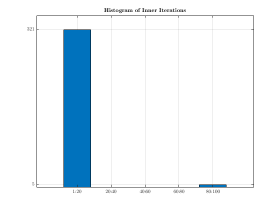
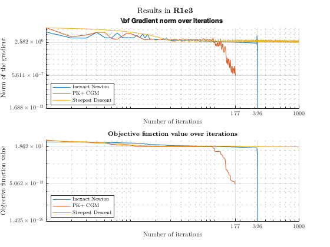

Contents
clear
close all force
clc
warning("off")
f = @(x) p25_function(x);
gradf = @(x) p25_gradient(x);
hessf = @(x) p25_hessian(x);
fterms_lin = @(gradf_norm) 0.5;
fterms_suplin = @(gradf_norm) min([0.5, sqrt(gradf_norm)]);
fterms_quad = @(gradf_norm) min([0.5, gradf_norm]);
kmax = 1e3;
tol = 1e-6;
n = 3;
dim = 10^n;
x0 = ones(dim,1);
i = 1;
while i<=dim
x0(i) = -1.2;
i = i + 2;
end
load forcing_terms.mat
btmax = 50;
c1 = 1e-4;
rho = 0.8;
gmres_maxit = 100;
tic
[~, fINN, ~, k_INN, gradients_INN, fINN_seq] = innewton_general(x0, f, gradf, hessf, kmax, ...
tol, c1, rho, btmax, fterms_quad, gmres_maxit);
comp_time = toc;
disp("****************")
disp("INEXACT NEWTON METHOD")
disp("****************")
disp("-----")
fprintf("In %d/%d its a solution with gradient" + ...
" equal to %e has been found\n", k_INN, kmax, gradients_INN(end))
disp("-----")
fprintf("In this point the function has value equal to %d\n", fINN_seq(end))
disp("-----")
fprintf("This solutions has been found in %e seconds\n", comp_time)
disp("****************")
tic
[~, fk, ~, k_INN_corr, grads_corr, values_corr, inner_INN] = innewton_general_with_correction(x0, f, gradf, hessf, kmax, ...
tol, c1, rho, btmax, fterms_quad, gmres_maxit);
comp_time = toc;
disp("****************")
disp("INEXACT NEWTON METHOD WITH CORRECTION")
disp("****************")
disp("-----")
fprintf("In %d/%d its a solution with gradient" + ...
" equal to %e has been found\n", k_INN_corr, kmax, grads_corr(end))
disp("-----")
fprintf("In this point the function has value equal to %d\n", values_corr(end))
disp("-----")
fprintf("This solutions has been found in %e seconds\n", comp_time)
disp("****************")
****************
INEXACT NEWTON METHOD
****************
-----
In 1000/1000 its a solution with gradient equal to 1.982006e+01 has been found
-----
In this point the function has value equal to 1.032316e+03
-----
This solutions has been found in 3.377654e+00 seconds
****************
****************
INEXACT NEWTON METHOD WITH CORRECTION
****************
-----
In 326/1000 its a solution with gradient equal to 1.688123e-13 has been found
-----
In this point the function has value equal to 1.424880e-26
-----
This solutions has been found in 8.310493e-01 seconds
****************
Accessing to informations related to the number of inner iterations
n_bins = 5;
set(groot, 'defaultAxesTickLabelInterpreter','latex');
set(groot, 'defaultLegendInterpreter','latex');
counts = histcounts(inner_INN,n_bins);
tick_material = sort(unique(counts));
tick_material = tick_material(2:end);
figure(1)
bar(1:n_bins, counts)
title("{\bf Histogram of Inner Iterations}", "Interpreter", "latex")
xticklabels(["1:20", "20:40", "40:60", "60:80", "80:100"])
yticks(tick_material)
yticklabels(tick_material)
grid()

PK PLUS
rho = 0.2;
tic
[~, fk_cgm, k_cgm, gradients_cgm, values_cgm] = nonlinear_PKplus(...
f, gradf, tol, x0, kmax, c1, rho, btmax);
comp_time = toc;
disp("****************")
disp("PK+ CONJ. GM")
disp("****************")
disp("-----")
fprintf("In %d/%d its a solution with gradient" + ...
" equal to %e has been found\n", k_cgm, kmax, gradients_cgm(end))
disp("-----")
fprintf("In this point the function has value equal to %d\n", fk_cgm)
disp("-----")
fprintf("This solutions has been found in %e seconds\n", comp_time)
disp("****************")
****************
PK+ CONJ. GM
****************
-----
In 177/1000 its a solution with gradient equal to 5.613526e-07 has been found
-----
In this point the function has value equal to 5.054749e-13
-----
This solutions has been found in 1.107145e-01 seconds
****************
Steepest Descent
rho = 0.3;
alpha0 = 0.85;
btmax = 100;
kmax = 1e3;
tic
[~, fk_SD, k_SD, grad_seq, fseq_SD] = SD_backtrack(x0, f, gradf, alpha0, ...
kmax, tol, c1, rho, btmax);
comp_time = toc;
fprintf("\nCOMPUTATIONAL TIME: %e seconds \n",comp_time)
disp("****************")
disp("SIMPLE STEEPEST DESCENT")
disp("****************")
disp("-----")
fprintf("In %d/%d its a solution with gradient" + ...
" equal to %e has been found\n", k_SD, kmax, grad_seq(k_SD))
disp("-----")
fprintf("In this point the function has value equal to %d\n", fseq_SD(k_SD))
disp("-----")
fprintf("This solutions has been found in %e seconds\n", comp_time)
disp("****************")
COMPUTATIONAL TIME: 4.367248e-01 seconds
****************
SIMPLE STEEPEST DESCENT
****************
-----
In 1000/1000 its a solution with gradient equal to 2.581939e+00 has been found
-----
In this point the function has value equal to 1.862065e+01
-----
This solutions has been found in 4.367248e-01 seconds
****************
Plots
close all force
figure(1)
sgtitle("Results in \bf R1e3", "Interpreter", "latex")
subplot(2,1,1)
hold on
plot(grads_corr, "LineWidth", 1.0)
plot(gradients_cgm, "LineWidth", 1.0)
plot(grad_seq, "LineWidth", 1.0)
l = legend("Inexact Newton", "PK+ CGM", "Steepest Descent", "Location", "southwest");
set(l, "Interpreter", "latex")
title("\bf Gradient norm over iterations", "Interpreter", "latex")
k_stops = sort([k_INN_corr, k_cgm, k_SD]);
grad_stops = sort([gradients_cgm(end), grads_corr(end), grad_seq(end)]);
yticks(grad_stops)
ytickformat("%.3e")
xticks(k_stops)
xlabel("Number of iterations", "Interpreter", "latex")
ylabel("Norm of the gradient", "Interpreter", "latex")
set(gca, "TickLabelInterpreter", "latex")
set(gca, "YScale", "log")
set(gca, "XScale", "log")
grid on
hold off
subplot(2,1,2)
hold on
plot(values_corr, "LineWidth", 1.0)
plot(values_cgm, "LineWidth", 1.0)
plot(fseq_SD, "LineWidth", 1.0)
l = legend("Inexact Newton", "PK+ CGM", "Steepest Descent", "Location", "southwest");
set(l, "Interpreter", "latex")
title("\bf Objective function value over iterations", "Interpreter", "latex")
k_stops = sort([k_INN_corr, k_cgm, k_SD]);
f_stop = sort([values_cgm(end), values_corr(end), fseq_SD(end)]);
yticks(f_stop)
ytickformat("%.3e")
xticks(k_stops)
xlabel("Number of iterations", "Interpreter", "latex")
ylabel("Objective function value", "Interpreter", "latex")
set(gca, "TickLabelInterpreter", "latex")
set(gca, "YScale", "log")
set(gca, "XScale", "log")
grid on
hold off
